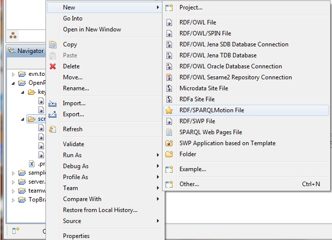
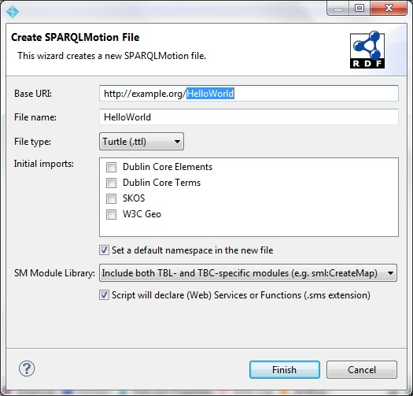
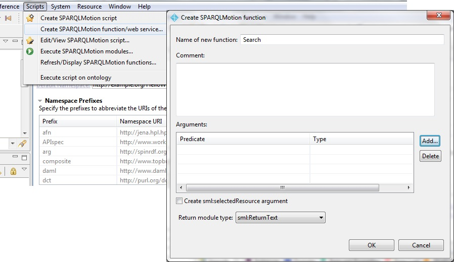
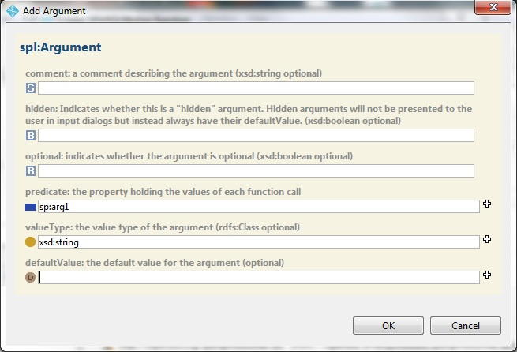
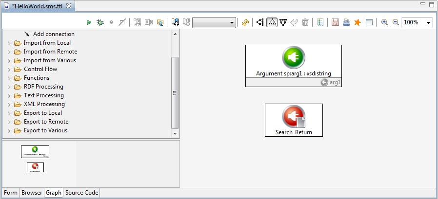
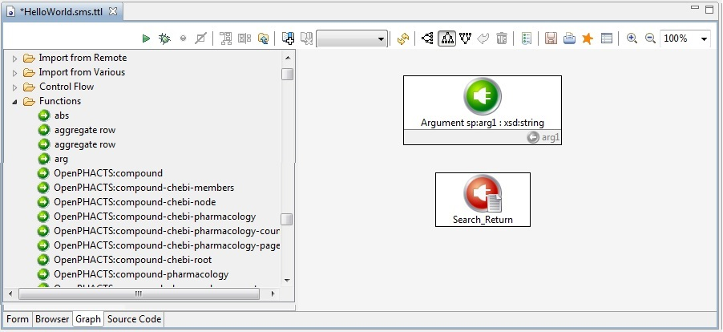
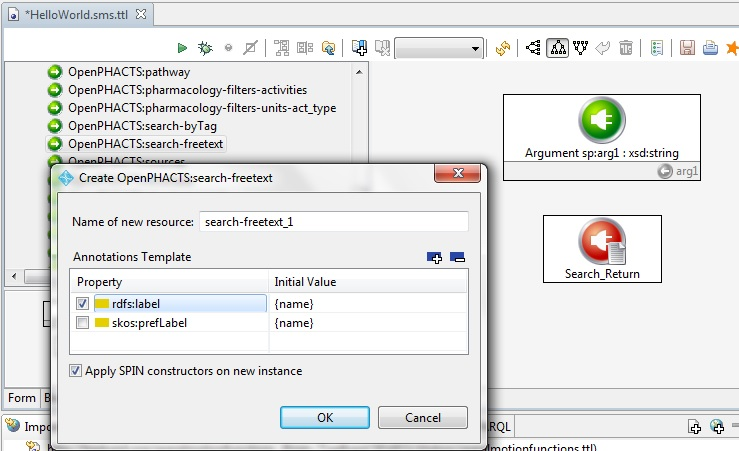
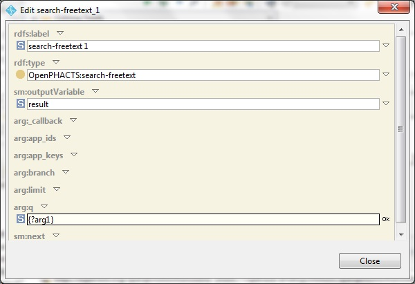
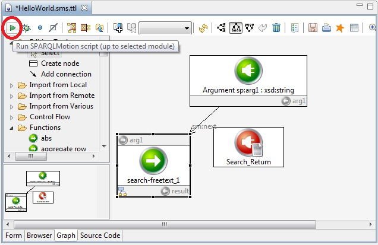

Hello World - your first OpenPHACTS SPARQLMotion script
Create a new SPARQLMotion file
Right-click on any folder in your workspace (we chose the OpenPHACTS/scripts folder in the image), and select New>RDF/SPARQLMotion file

Change base URI to be called HelloWorld; the file name will change automatically to match. Also, select "Script will declare (Web) Services or Functions (.sms extension)".

Import the OpenPHACTS modules into your script
Drag the file OpenPHACTS.ttl onto the Imports tab (the imports tab is open right after you create a new file). You can drop the file anywhere in the imports tab.
Create a new SPIN function
Click Scripts>Create SPARQLMotion function/web service. In the resulting window, fill in the name of the new function to be "Search", and select ReturnText as the Return Module type.

Under Arguments, click "Add", and fill in sp:arg1 and xsd:string as the predicate and valueType respectively. Make sure you hit return after typing each of these, then click "OK".

Click "OK" on the Create SPARQLMotion Function page to finish. Your screen will refresh, and the pane in the middle of your screen should look something like this:

This is a minimal script for your Search function; it has a single argument (called arg1), and will return some text. The body of the script is yet to be written.
Select an API service from the OpenPHACTS pallet
On the left of the SPARQLMotion pane is a pallet of options, ordered by categories (Editing Tools, Import from Local, Import from Remote, etc.). Scroll down to "Functions" and open the tree. You'll see a list of functions. Scroll down until you see the functions whose names start with OpenPHACTS (you'll have to scroll farther than is shown in the image; it has been truncated to fit into the document)

Scroll down until you can select "OpenPHACTS:search-freetext" from the pallet. Drag and drop it on to the canvas. When you drop it, you will be prompted to name the new module you have created. You can change its name if you like, but for this tutorial I will use the default name, which is the same as the module type with a sequence number. Click OK when you are done.

This will create a new modeul of type search-freetext on your pallet. Your cursor will change to an icon that shows you are about to connect two modules. Click first on the module called sp:arg1, then click on your new module. This will creat a visual link between the two modules. This link is labeled sm:next, and indicates a dataflow dependency between the two modules; your new module depends on arg1.
Double-click on your new module. The form that pops up will show all the parameters of the search-freetext services of OpenPHACTS. You don't need to worry about the app_id and the app_key; these will be filled in automatically by the stubs. For searh-freetext, the only required parameter is q. Fill that in with {?arg1}. This indicates that we will pass the first arg to our function verbatim to the freetext search service. Click "OK" and "Close" in this window.

Take it out for a test drive
You can test any SPARQLMotion script fragment in TopBraid Composer by selecting it, and clicking the "run" button in the upper left-hand corner of the SPARQLMotion pallet. Give it a try.

The script will pop up a prompt for arg1. To follow the OpenPHACTS webinar, let's type in Sorafenib.
IMPORTANT: Make sure to hit return before you click "Next>" to move on to execute the script!
Next: Querying the API results